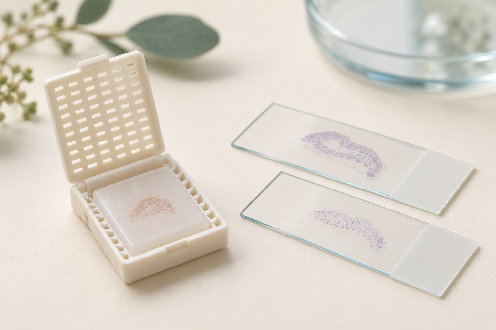
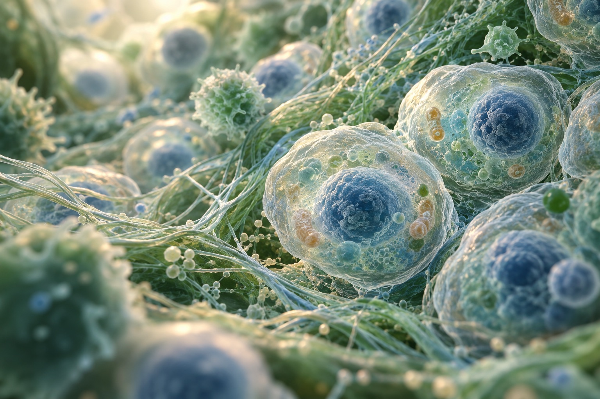
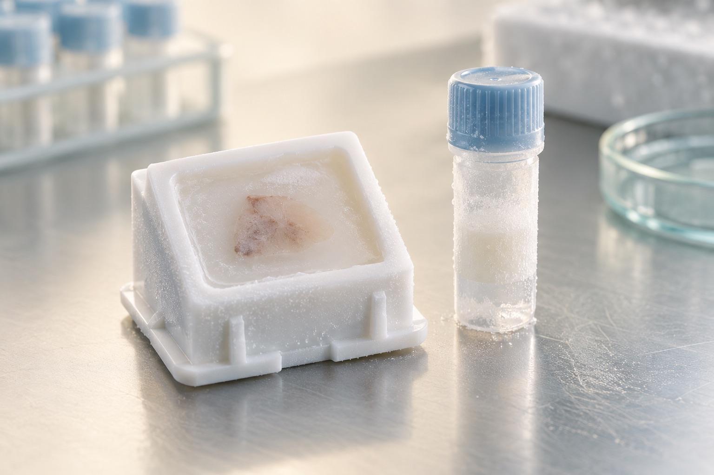
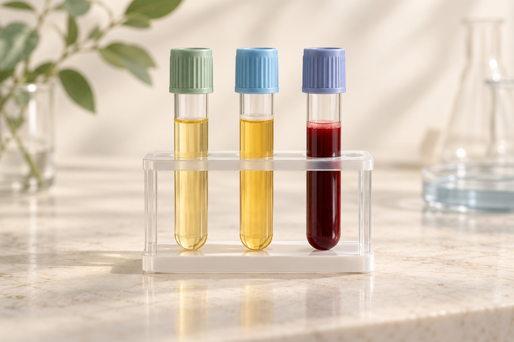
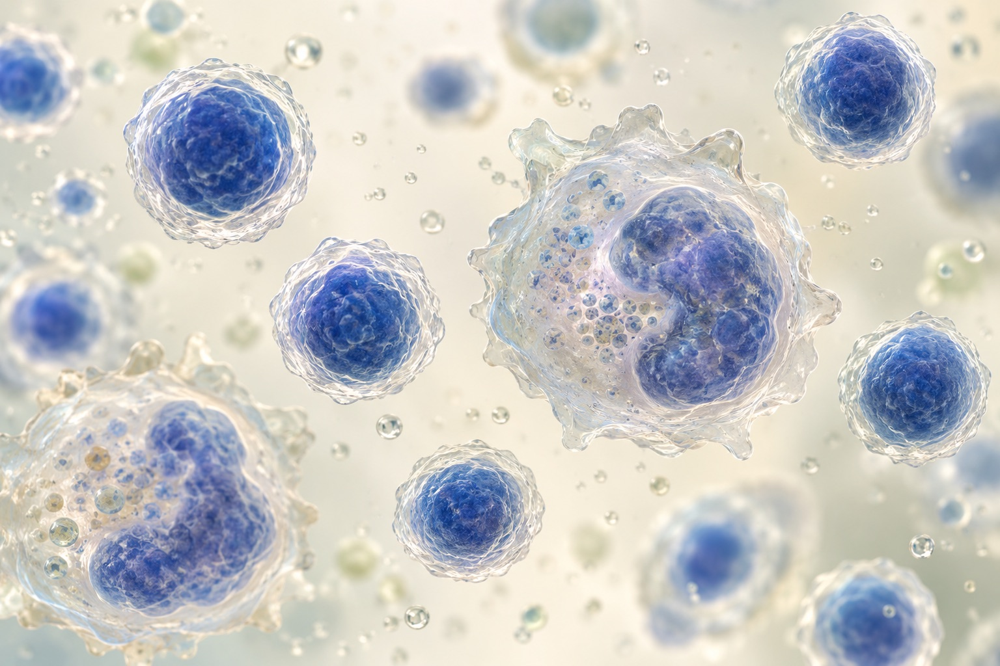

Spatial-grade FFPE tissue blocks
Primary surgical resections and mucosal punch biopsies fixed under strict kinetic protocols, with matched adjacent normal tissue (NAT).
Accurate samples. Better insights.
Delivered in weeks, not months.
High-plex spatial transcriptomics and proteomics assays cost thousands of dollars per slide in reagents alone. We help prevent pre-analytical failure with prospectively collected human tissues and matched biofluids, controlled ischemic times, verified RNA integrity, and longitudinal clinical annotation.

Your assay is only as reliable as its starting material. Quality begins long before a specimen reaches your lab.
Purpose-built starting material for spatial transcriptomics, proteomics, and multi-omics research.

Primary surgical resections and mucosal punch biopsies fixed under strict kinetic protocols, with matched adjacent normal tissue (NAT).

Rapid snap-frozen tissue preserved in optimal cutting temperature (OCT) compound for spatial enzymatic and RNA-seq assays.

Fresh-frozen serum, K2-EDTA plasma, and whole blood collected concurrently to connect spatial tissue signatures with circulating biomarkers.

High-viability peripheral blood mononuclear cells (PBMCs) isolated via standardized Ficoll-Paque separation.
AI-generated specimen illustrations.
Explore the disease indications supported by our clinical network.
Extensive access to Crohn’s Disease, Ulcerative Colitis, and matched non-IBD control tissues, complete with endoscopic severity scores and medication histories.
Request this cohortAutoimmune cohorts with longitudinal biofluid draws to support the study of disease progression and immune response.
Request this cohortCharacterized primary tumor resections, adjacent normal tissue, and longitudinal serum/plasma pairs across key cancer indications.
Request this cohortAcute and chronic inflammatory cohorts, NAFLD/NASH, and specialized biofluid profiles for focused translational studies.
Request this cohortOur hospital network operates across multi-specialty tertiary centers. We build custom prospective collection protocols tailored to your inclusion/exclusion criteria.
Sourced under active Master Protocols reviewed and approved by CDSCO/DHR-registered Institutional Ethics Committees aligned with US OHRP/DHHS standards.
Prospective cohorts use comprehensive Participant Information Sheets (PIS) and Informed Consent Forms (ICF) granting commercial research rights and cross-border research use.
Unique alphanumeric tracking codes protect donor identity. No protected health information (PHI) leaves source hospital sites, under HIPAA and DPDPA 2023 privacy standards.
Temperature-logged international air transit with real-time temperature verification and documented chain of custody from source hospital to laboratory.
Define your study specifications. Our scientific team will assess hospital network capacity and deliver a feasibility assessment and pricing report within 48 business hours of receiving your request.